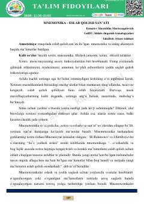

MEMaqola xotirani rivojlantirish va ma'lumotlarni oson eslab qolish usullari haqida.
Ushbu maqola mnemonika tushunchasi, uning tarixi va inson xotirasini mustahkamlashdagi ahamiyatini yoritib beradi. Muallif xotirani rivojlantirish usullari, jumladan, qadimiy 'Loci' metodi va zamonaviy assotsativ texnikalarning o'quv jarayonidagi o'rni haqida ma'lumotlar taqdim etadi.